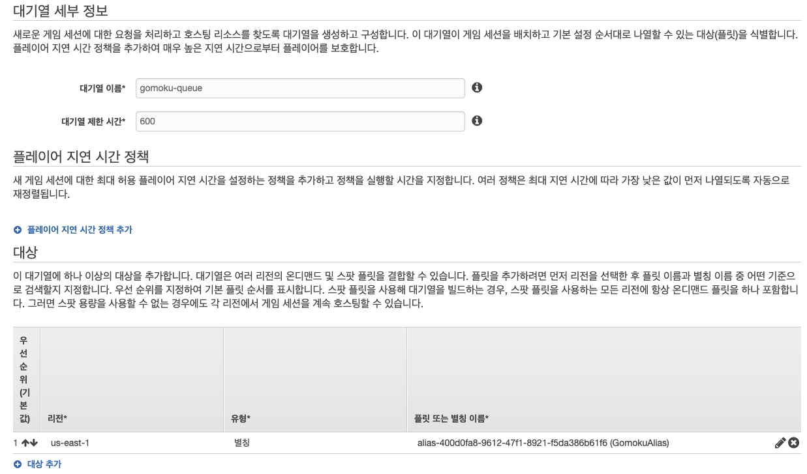

Serverless FlexMatch 구성하기
Serverless 기반의 FlexMatch 기능 이용하기
본 실습에서는 다양한 구현 아키텍처를 보여주기 위하여 FlexMatch 기능은 서버리스 매치메이킹을 이용합니다.
FlexMatch 를 이용하면, 별도의 매치메이커 서버를 구현할 필요 없이 세션 매칭 기능을 이용하실 수 있습니다.
기능을 이용하기 위해서는 서버 또는 클라이언트 레벨에서 FlexMatch API 또는 SDK 의 호출이 필요하며, 이번 실습에서는 이를 위해 Lambda 함수를 사용합니다.
GameLift Queue 설정
FlexMatch 를 사용하기 위해서는 GameLift 의 Queue 서비스를 사용해야 합니다.
- 메뉴에서 Create a queue 를 선택합니다.
- 아래와 같이 Queue 의 이름을 입력하고, Add destination 에서 앞서 생성한 Alias 를 선택합니다. Create queue 를 선택하여 queue 를 생성합니다.

-
다음 단계를 FlexMatch 를 위한 rule 을 만듭니다. Create matchmaking rule set 을 선택합니다.
-
아래와 같이 Rule set 의 이름을 입력하고 Rule set 을 넣어 줍니다. Rule set 은 제공된 프로젝트의 루트폴더에서 Ruleset 폴더 하위의 GomokuRuleSet.json 의 파일 내용을 복제하여 넣어 줍니다.
{
"ruleLanguageVersion" : "1.0",
"playerAttributes" :
[
{
"name" : "score",
"type" : "number",
"default" : 1000
}
],
"teams" :
[
{
"name" : "blue",
"maxPlayers" : 1,
"minPlayers" : 1
},
{
"name" : "red",
"maxPlayers" : 1,
"minPlayers" : 1
}
],
"rules" :
[
{ "name": "EqualTeamSizes",
"type": "comparison",
"measurements": [ "count(teams[red].players)" ],
"referenceValue": "count(teams[blue].players)",
"operation": "="
},
{
"name" : "FairTeamSkill",
"type" : "distance",
"measurements" : [ "avg(teams[*].players.attributes[score])" ],
"referenceValue" : "avg(flatten(teams[*].players.attributes[score]))",
"maxDistance" : 300
}
],
"expansions" :
[
{
"target" : "rules[FairTeamSkill].maxDistance",
"steps" :
[
{
"waitTimeSeconds" : 10,
"value" : 500
},
{
"waitTimeSeconds" : 20,
"value" : 800
},
{
"waitTimeSeconds" : 30,
"value" : 1000
}
]
}
]
}
여기서의 rule 은 간단하게 score 점수가 300 점 이내의 사용자간에 Match 를 시켜주며 해당 사용자 match 가 시간내에 안 될 경우, rule 을 완화하여 match 시켜 줍니다. Validate rule set 을 선택하여 rule set 이 정상인지 확인 한 후에 create rule set 으로 rule set 을 생성합니다.

- 다음은 앞서 만든 Queue 와 Matchmaking rule set 을 연결 시켜 주는 작업을 수행합니다. Create matchmaking configuration 을 메뉴에서 선택합니다. 아래와 같이 앞서 만든 queue 와 rule set 을 선택하여 configuration 을 생성합니다. 리전 및 대기열 선택을 확인합니다.

Lambda 함수 구성
CloudFormation 스택을 배포하셨다면, 이미 Lambda 함수의 기본 틀은 마련되어 있습니다. 단계를 진행해보시면서 필요한 부분만 채워주시면 됩니다.
이제 GameLift 의 FlexMatch 설정은 완료하였습니다. 다음은 game client 가 FlexMatch 요청을 하는 Lambda 와 API Gateway 를 구성합니다. 이번 랩에서는 총 2개의 Lambda 함수를 생성할 것입니다. 하나는 client로부터 MatchMaking 요청을 처리하는 람다함수이고, 다른 하나는 MatchMaking 결과를 확인하기 위한 요청을 처리하는 람다입니다. 첫번째로 Matchmaking 요청을 처리하는 람다를 생성합니다.
앞서 과정에서 해봤다면, 어렵지 않을 것입니다!
-
콘솔에서 Lambda 메뉴로 이동합니다. https://console.aws.amazon.com/lambda
-
Create function 버튼을 클릭하여 첫번째 함수 생성을 시작합니다.
-
Author from scratch 메뉴를 선택하여 빈 함수를 우선 생성합니다.
-
Name 항목에는 game-match-request를 입력합니다.
-
Runtime은 Python 3.9을 선택합니다.
-
Permissions 항목에서 Role 은 Use an existing role을 선택하고 기존에 만들어둔 Gomok-game-match-request를 선택하고 Create function을 실행합니다.

- 제공된 소스 파일 중 Lambda 폴더 밑에 있는 MatchRequest.py의 내용을 Lambda 코드창에 복제해 넣습니다. 코드 상의 Region과 Match Config의 이름이 앞서 생성한 이름과 동일한지 확인합니다. (대소문자 일치하도록 확인)

아울러 핸들러로 지칭하는 함수와 소스 코드의 함수명이 일치하는지 확인합니다.
- 기본 설정에서 Lambda 함수의 실행 시간 및 메모리 설정을 합니다.
- Memory : 128MB
- Timeout : 1 min
Lambda 함수의 핸들러 설정을 잘 체크해줍니다. Lambda 함수가 실행되면 해당 핸들러가 실행됩니다.
-
Save 버튼을 클릭하여 함수를 생성합니다. 생성한 함수는 game client 의 Matchmaking 요청을 받아 DynamoDB 에서 사용자의 정보를 읽고 이에 기반하여 GameLift 에 match making 을 요청합니다.
-
Create function 버튼을 클릭하여 두번째 함수 생성을 시작합니다.
-
Author from scratch 메뉴를 선택하여 빈 함수를 우선 생성합니다.
-
Name 항목에는 game-match-status를 입력하고 Runtime 으로 Python 3.9 을 선택합니다.
-
Permissions 항목에서 Role 은 Use an existing role을 선택하고 기존에 만들어둔 Gomok-game-match-status를 선택하고 Create function을 실행합니다.
-
제공된 소스 파일 중 Lambda 폴더 밑에 있는 MatchStatus.py 의 내용을 Lambda 코드창에 복제해 넣습니다.

-
앞서와 같이 Lambda 함수 실행시간을 1 분으로 조정합니다.
-
Save 버튼을 클릭하여 함수를 생성합니다. 생성한 함수는 game client 가 TicketId 로 자신이 요청한 match making 요청이 완료되었는지를 확인하고 요청이 완료되었다면 client 가 접근할 게임서버의 IP 주소와 Port 를 알려 줍니다
API Gateway 구성
다음은 앞서 생성한 Lambda 함수를 game client 가 호출할 수 있도록 API Gateway 를 설정합니다.
-
우선 콘솔에서 API Gateway 메뉴로 이동합니다. (https://console.aws.amazon.com/apigateway)
-
앞서 생성한 API Gateway를 선택하고 Create Resource를 선택합니다.

- Resource name은 matchrequest를 입력하고 Enable API Gateway CORS를 체크 하고 Create Resource 버튼을 클릭하여 Resource를 생성합니다.

-
생성한 Resource에 새로운 Method를 생성합니다. Actions 버튼을 클릭한 뒤 Create Method 메뉴를 선택하고, POST 메서드에 대한 API 를 구성합니다.
-
POST 메소드의 상세 설정에서 Integration type은 Lambda Function을 선택하고 Lambda Region에 실습을 진행 중인 Region을 선택합니다. Lambda Function에는 앞서 생성한 game-match-request를 선택한 뒤 Save 버튼을 클릭합니다

-
두 번째 람다함수를 연동하기 위해 생성한 API 에 두 번째 Resource 를 만듭니다. API 의 root 를 선택하고 Actions 에서 Create Resource 를 선택합니다.
-
앞선 두 번의 API 생성과 동일한 방식으로 생성합니다. Resource Name 은 matchstatus 로 입력합니다. Enable API Gateway CORS 를 체크합니다.

-
POST 메소드를 생성하고 game-match-status 람다 함수를 연동하고 Save 버튼을 클릭하여 저장합니다.
-
FlexMatch 를 위한 Lambda 함수들이 모두 구성되었습니다. 이제 API 에 대한 배포를 수행합니다. Actions 버튼을 클릭하고 Deploy API 메뉴를 클릭합니다.

- 완료되면 API의 Invoke URL이 표시됩니다. 아래 URL은 game client 설정에 사용됩니다.